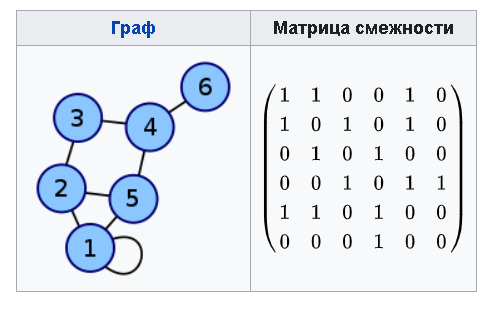

Матрица смежности графа G с конечным числом вершин n (пронумерованных числами от 1 до n) — это квадратная матрица A размера n х n, в которой значение элемента a(i,j) равно числу рёбер из i-й вершины графа в j-ю вершину.
Пример. Составить матрицу смежности для графа, представленного на рисунке ниже.

Таким образом, матрица смежности неориентированного графа симметрична относительно главной диагонали.